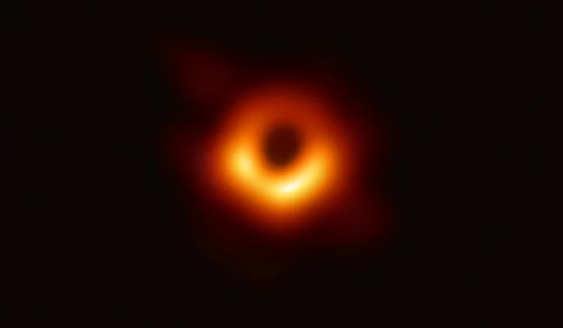

Black Holes
Black holes are one of the most mysterious and powerful forces in the universe. A black hole is where gravity has become so strong that nothing around it can escape, not even light. The mass of a black hole is so compact, or dense, that the force of gravity is too strong for even light to escape.
Black holes are truly invisible. We can't actually see black holes because they don't reflect light. Scientists know they exist by observing light and objects around black holes. Strange things happen around black holes to do with quantum physics and space time. This makes them a popular subject of science fiction stories even though they are very real.
Black holes are formed when giant stars explode at the end of their lifecycle. This explosion is called a supernova. If the star has enough mass, it will collapse on itself down to a very small size. Due to its small size and enormous mass, the gravity will be so strong it will absorb light and become a black hole. Black holes can grow incredibly huge as they continue to absorb light and mass around them. They can even absorb other stars. Many scientists think that there are super-massive black holes at the center of galaxies.
The idea of the black hole was first proposed by two different scientists in the 18th century: John Michell and Pierre-Simon Laplace. In 1967, a physicist named John Archibald Wheeler came up with the term "black hole".
